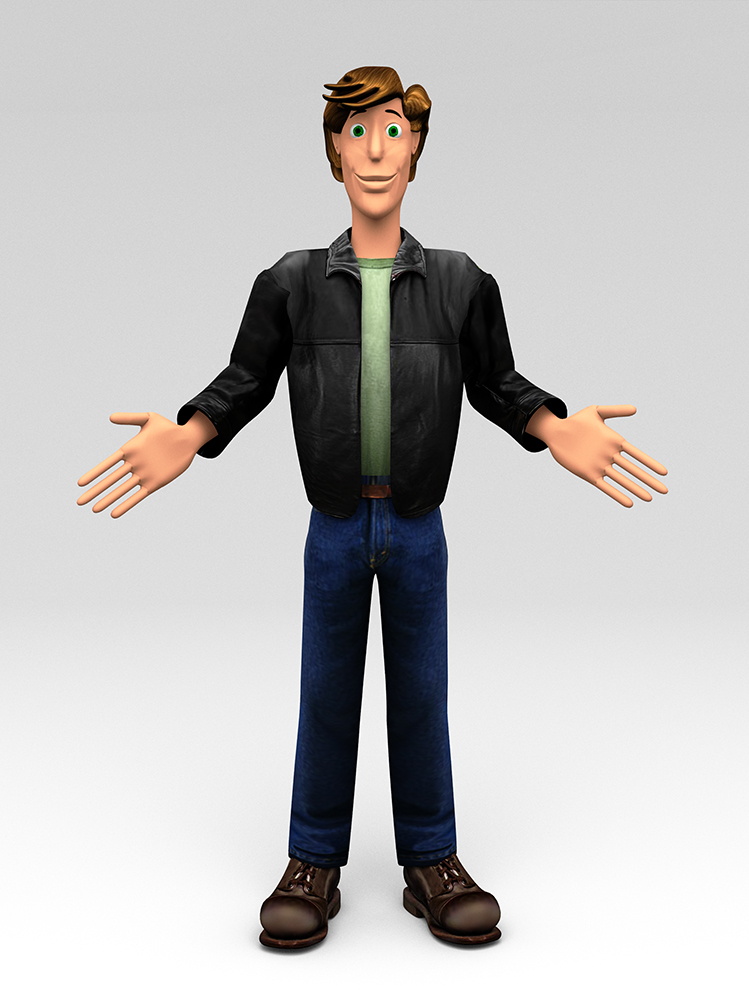

Arthur Kunstlinger (2008)
Arthur Kunstlinger is the main character in a story that I made up for my boys. He stumbles upon a door to another world while playing hooky and finds a nutty professor who starts teaching him how to create his own worlds with this amazing magical clay-like material called artifice. The professor tells him that there is an entire civilization spanning many worlds created by a society of artisans called the Worldsmiths and that he hopes Arthur will become a Wolrdsmith himself one day. But Arthur grows impatient and runs away to find the Worldsmiths for himself. Once he's out on his own, he learns that he knows just enough to get himself into some big trouble.
You only really learn how to use a new application once you create your first big project, and Arthur was my first big project in Blender. With him, I learned how to mesh, rig, skin, shade, and animate characters, and I also created the first world in the Blender game engine. The character shown here took me eight months to create, measured from when I drew the first sketch to when I was finally crushed under the complexity of the project. Zachary was only a year old at the time, and Benjamin wasn't even born, yet. At the time, I imagined that I would be able to animate some scenes before they were old enough to understand the story, but this is the only finished image that ever came out of the project. I finally started telling them the story this year (2016), and it has been great fun. I peruse the old project files occasionally to inspire me to keep going with the story.
Much of the reason why Arthur's story and Blender continue to hold my interest came from my experiences playing World of Warcraft and Second Life before my sons were born. So many people invest so much of their lives in these online realities, now, and the hunger for new material never seems to end. I wanted to see how the sausage was made, so to speak, since the chips that I make are helping (in very small part) to keep these worlds going. Is there any redemption in these worlds, or are they simply time-wasters?
Arthur was made in Blender, with textures adapted in Photoshop from pictures that I found on the web. The jeans are Levi's 505, the boots are 1958 army combat boots that I found at classicboots.com, and I have no idea where the jacket comes from, because it's sold by 11 different online retailers, each of which give it no trademark other than their own. I rendered this image using Yafaray in 2016 so that I could have something to show for all my effort!
© W. Rhett Davis 2008, 2016